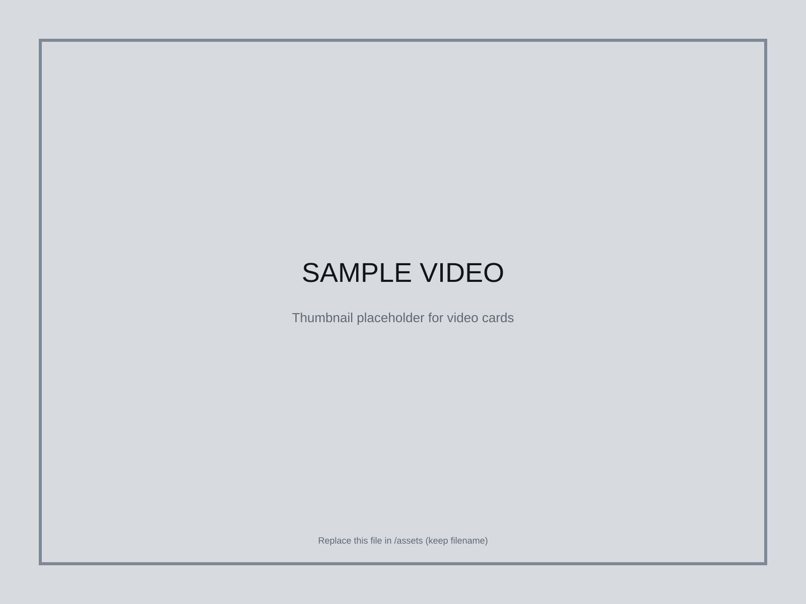

Video
Motion Study
A case-study page template for motion and video projects. Embed a final cut or show keyframes.
Overview
Use this page as a customizable project template. Replace the image, text, links, and process notes with your own content.
Process
- Objective / brief
- Tools / workflow
- Outcomes / results